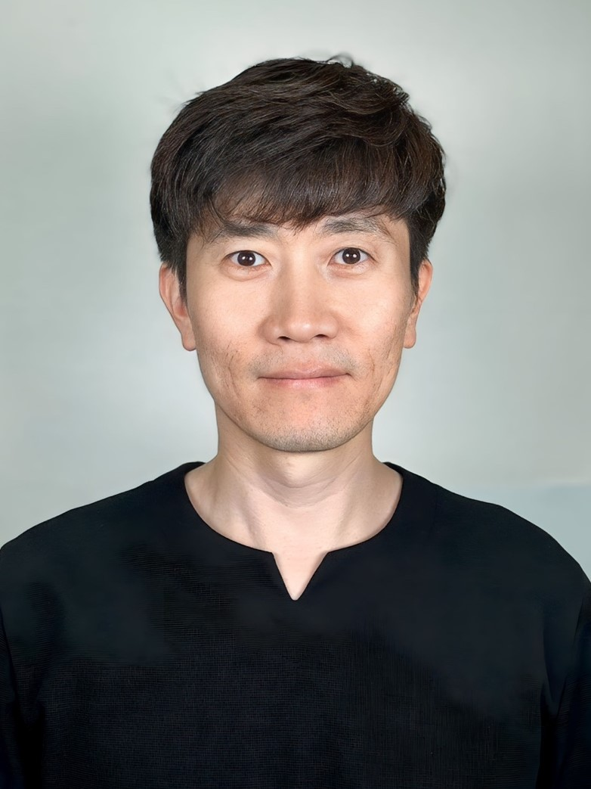

버스를 운전하며 삶을 기록하고, 유튜브와 콘텐츠를 통해 자유민주주의와 기독교적 가치관을 전합니다. AI와 기술을 활용해 새로운 가능성을 만들고, 3D 프린팅과 디지털 콘텐츠로 현실적인 수익 구조를 구축하고 있습니다.

단순한 취미나 기록이 아닌, 신념과 메시지를 담아내는 삶의 방향성입니다.
성경적 가치관과 질서를 중요하게 여기며, 교회 공동체 안에서 방송실과 성가대로 섬기고 있습니다.
역사·사회·세계관 콘텐츠를 통해 대한민국과 자유민주주의의 가치를 알리는 영상을 제작합니다.
3D 프린터를 활용해 여과기 부품과 생활용품을 제작하며, 온라인 판매까지 직접 운영하고 있습니다.
대한민국 사회와 역사, 가치관에 대한 관심을 갖기 시작했습니다.
성실함과 책임감을 바탕으로 대중교통 현장을 지켜왔습니다.
AI 기술과 영상 제작을 결합해 새로운 콘텐츠 세계를 구축하고 있습니다.
신앙과 현실, 기술과 콘텐츠를 연결하며 영향력을 넓혀가고 있습니다.